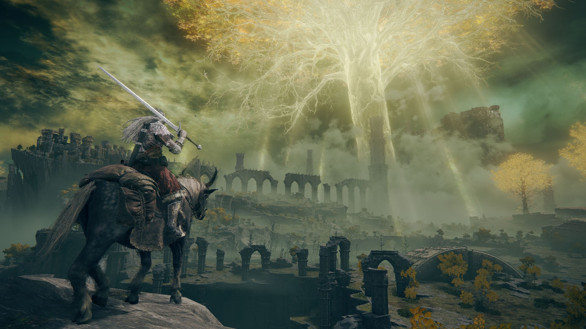

In Elden Ring, the central protagonist is not a fixed character but the Tarnished, a custom-created figure through whom the player experiences the story. The Tarnished are exiles, once stripped of grace and cast out of the Lands Between, who are summoned back after the shattering of the Elden Ring to seek its fragments and determine the world's fate. Unlike the demigods or gods, the Tarnished begins powerless and insignificant, embodying themes of struggle, perseverance, and the possibility of transcendence through sheer will and determination.
The Tarnished is guided by the mysterious Grace; golden lights pointing toward destiny and aided by companions such as Melina, a spectral maiden who offers guidance and the means to harness runes. The player's choices determine what kind of protagonist the Tarnished becomes: a restorer of the Golden Order, a rebel who overturns it, or even a servant of outer, alien gods who would reshape reality entirely.
In essence, the Tarnished symbolizes human ambition and resilience, standing in contrast to the corrupted demigods and divine forces. Where the antagonists represent decay, obsession, and failed legacies, the protagonist embodies the potential for renewal, rebellion, or ruin, depending on the path chosen by the player.
|  |
|---|